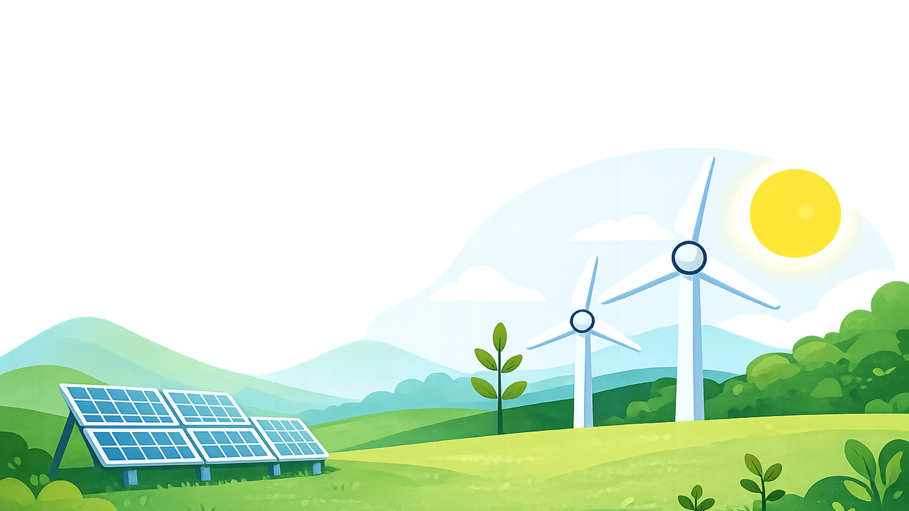
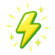

Quer calcular o seu consumo de energia?
Comece aqui e agora!

| Monitore o seu consumo
| Calcule o gasto dos aparelhos
| Aprenda a economizar
A LumiTech é uma plataforma desenvolvida para ajudar pessoas a compreender, monitorar e reduzir o consumo de
energia elétrica de forma simples, prática e acessível.
Pensando no impacto que as contas de energia têm no orçamento das famílias e na importância do uso consciente dos
recursos naturais, o projeto busca promover mais economia, sustentabilidade e educação ambiental no dia a dia.
Através de uma interface intuitiva e responsiva, os usuários podem registrar seu consumo mensal, acompanhar o
histórico de gastos, utilizar uma calculadora de consumo de aparelhos elétricos e acessar dicas inteligentes para
economizar energia.
Inspirada nos princípios do ODS 7 — Energia Limpa e Acessível — a LumiTech une tecnologia, conscientização e
praticidade para incentivar hábitos mais sustentáveis, contribuindo tanto para a redução de custos financeiros
quanto para a preservação do meio ambiente.

Ajudar você a economizar energia de forma inteligente.
Coletamos dados e geramos insights personalizados.
Reduza custos e contribua com o meio ambiente.